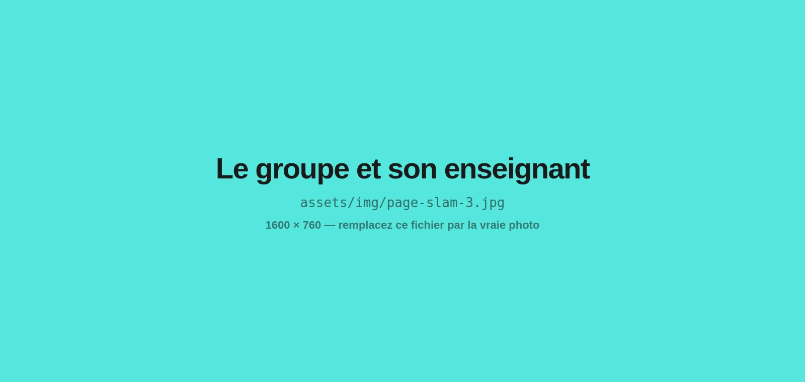

Ateliers slam
Réconcilier les jeunes avec la langue française par un art actuel et accessible. Les élèves écrivent, puis montent sur scène.
Dans le slam, on écrit pour dire. C'est la discipline mère de mes interventions : celle qui structure toutes les autres, et celle qui transforme le plus visiblement le rapport d'un élève à sa propre parole.
Comment se déroule un parcours
Poser le cadre
Je présente le mouvement slam, les règles de l'atelier et ses valeurs : l'écoute, le courage, les applaudissements pour tous, le respect de l'autre. Puis une démonstration en live, pour montrer plutôt qu'expliquer.
Jouer avec la langue
Des jeux collectifs à voix haute, créés spécifiquement pour le projet, portant chacun sur un thème ou une technique d'écriture. Personne n'écrit avant d'avoir entendu sa propre voix dans la salle.
Masterclass de poésie
Sous forme interactive, je passe en revue rimes, métrique et figures de style. Tous les outils poétiques qui servent la rythmique orale autant que la forme écrite. C'est là que votre programme de français trouve son support.
Écrire sous contrainte
Je décortique chaque étape de l'écriture pour que les élèves écrivent librement, tout en étant accompagnés. La contrainte lève la pression de la page blanche.
Mettre en bouche
Souffle, regard, silences, appuis. La moitié du travail se joue au passage de la feuille à la voix — c'est aussi là que la plupart des ateliers d'écriture s'arrêtent.
Monter sur scène
L'aboutissement de chaque parcours. Devant la classe, l'établissement ou les familles. Les applaudissements prennent une grande place : l'élève doit être conscient de la mission accomplie.
Les objectifs travaillés
Le slam, c’est quoi ?
En anglais, « slam » signifie claquer. Un slam de poésie est une restitution orale et scénique, sans musique, nourrie de textes poétiques. Né dans les bars de Chicago dans les années 1980, ce courant de la poésie contemporaine allie écriture, interprétation et gestuelle. C'est l'art littéraire et oratoire le plus complet qui soit : figures de style, storytelling, schémas de rimes, mémorisation, gestion du stress, prise de parole, musicalité.
Et côté équipe pédagogique
Pour l'enseignant, l'atelier slam est un support réel pour introduire la partie du programme consacrée à la poésie. Les notions sont abordées par la pratique, dans l'ordre qui sert le texte de l'élève plutôt que celui du manuel.

Questions fréquentes
Ce qu'on me demande le plus souvent avant de lancer un projet ateliers slam.
Une séance d'écriture et d'oralité animée par un slameur professionnel. On y écrit un texte poétique personnel, puis on apprend à le dire debout, devant les autres. L'écriture et la mise en voix comptent autant l'une que l'autre : dans le slam, on écrit pour dire.
Non, et c'est même le contraire : l'atelier slam s'adresse d'abord à ceux que le mot « poésie » fait fuir. Les jeux collectifs à voix haute passent avant la page blanche, et chaque étape de l'écriture est découpée et accompagnée. Personne ne se retrouve seul face à sa feuille.
Un projet tourne autour de 8 h en moyenne, en séances de 2 h. C'est le format où les participants produisent le plus. Cela dit, chaque projet se construit au cas par cas : il m'arrive de mener 20 h avec une classe puis 4 h avec une autre. Dites-moi votre volume, je vous dis ce qu'on peut viser.
Oui. Rimes, métrique, figures de style, rhétorique : toutes les notions du chapitre poésie sont abordées, mais par la pratique et dans l'ordre qui sert le texte de l'élève plutôt que celui du manuel. Beaucoup d'enseignants s'en servent comme porte d'entrée avant le cours, ou comme prolongement après.
Personne n'est forcé. Le passage se prépare progressivement — d'abord assis, puis debout, puis devant quelques-uns, puis devant le groupe — et celui qui ne veut pas lire peut faire lire son texte. Dans les faits, la grande majorité finit par passer, parce que le cadre a été posé dès la première heure.
Oui. Il vous suffit de me contacter pour discuter de votre projet : l'offre est disponible sur la plateforme ADAGE quelques heures après notre échange. Je suis également agréé par l'Éducation nationale.
Sur le terrain
Des ateliers slam, racontés
Les autres interventions
Donnez à vos élèves l'envie des mots
Plus de 300 ateliers menés et 5 000 participants rencontrés, dans toute la France. Décrivez-moi votre contexte, je réponds avec une proposition adaptée.